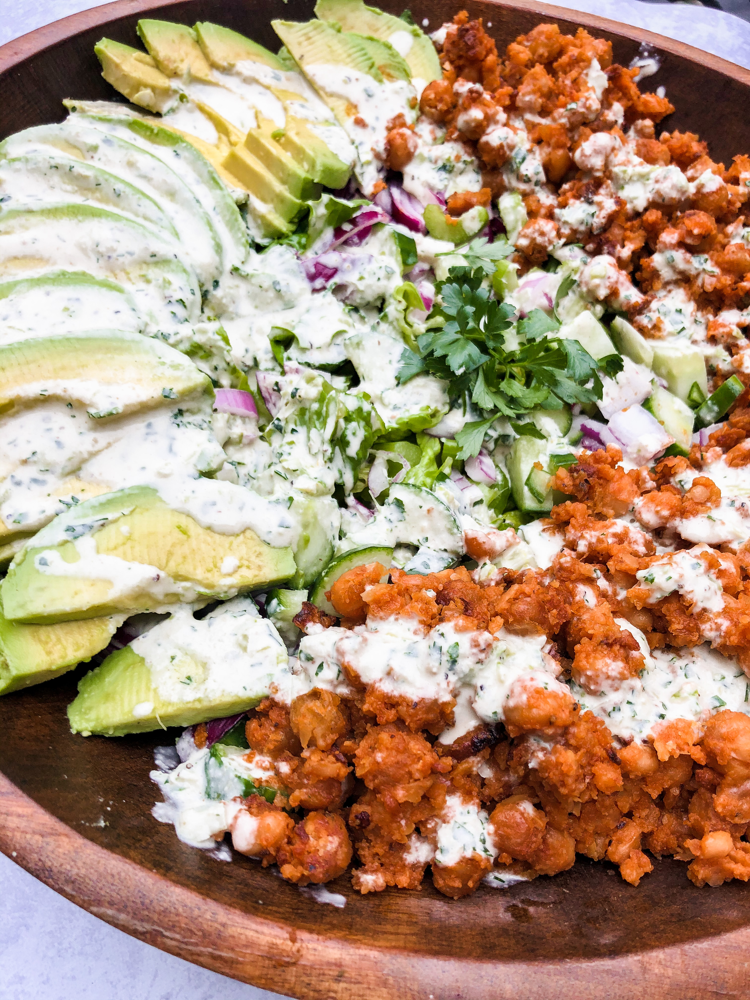
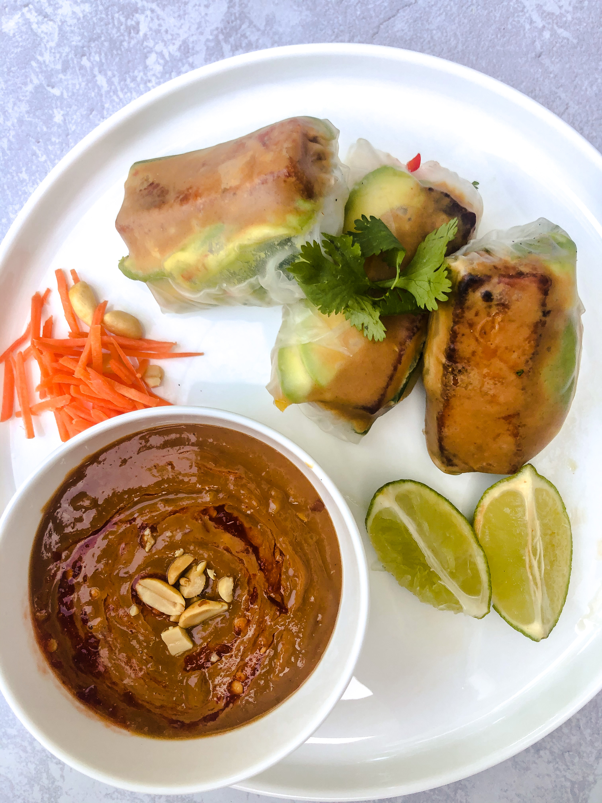
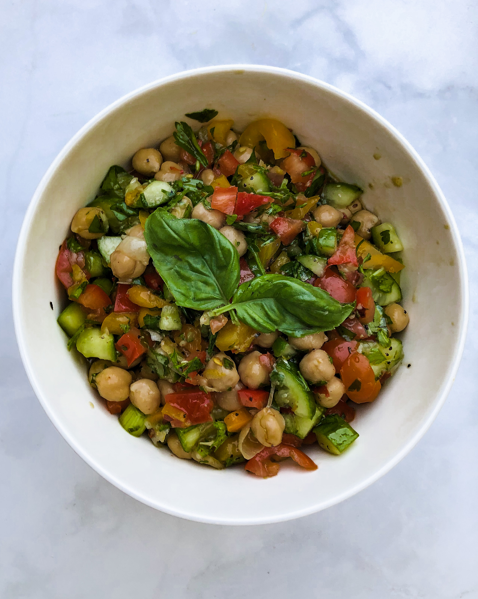
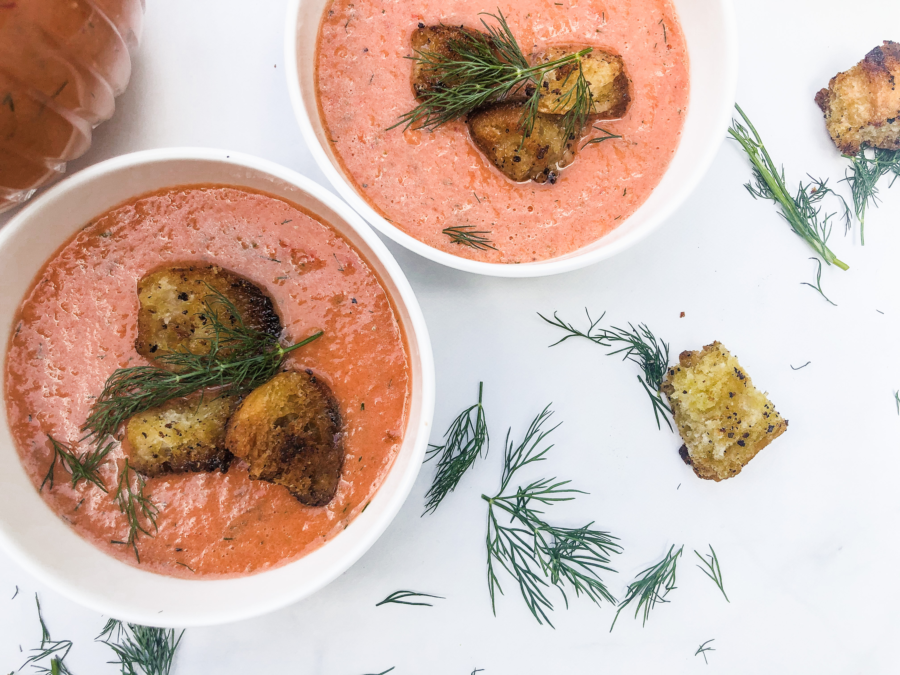

The best buffalo cauliflower wings with vegan ranch!.

A healthier way to enjoy your buffalo obsession; this buffalo chickpea salad is so delicous!. So simple and light these lemon shortbread cookies are the perfect summer desert.

Tofu fresh rolls filled with avocado, mango and other veggies and served with the best peanut dipping sauce! Delicious homemade hummus and babaganoush with pita and veggies is such a great appetizer for any occasion.

A raw and refreshing mediteranian salad with chickpeas and diced veggies. Vegan barbeque pulled "pork" sliders made with jackfruit and topped with coleslaw.

Refreshing watermelon cazpacho topped with homemade croutons. Beer battered "fish" tacos topped with slaw and chipotle aoili.